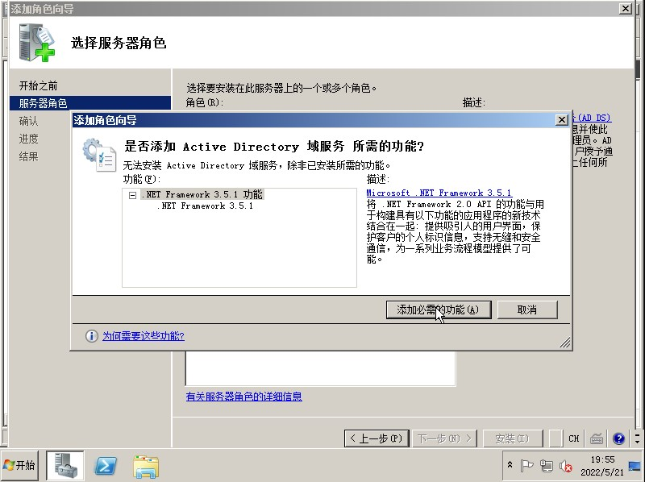
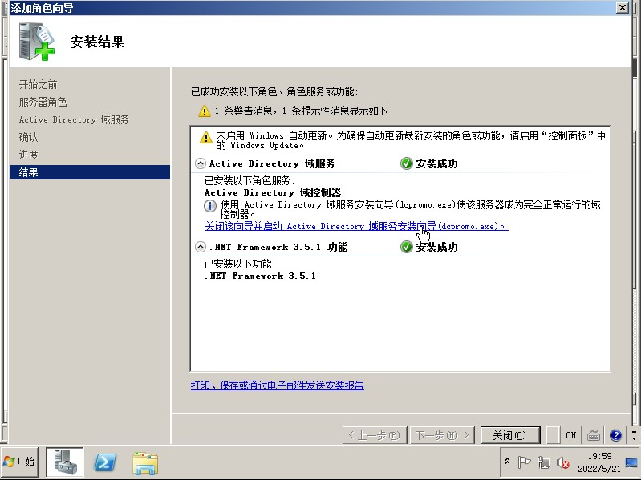
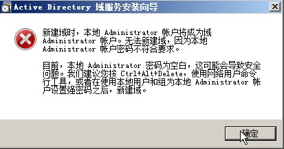
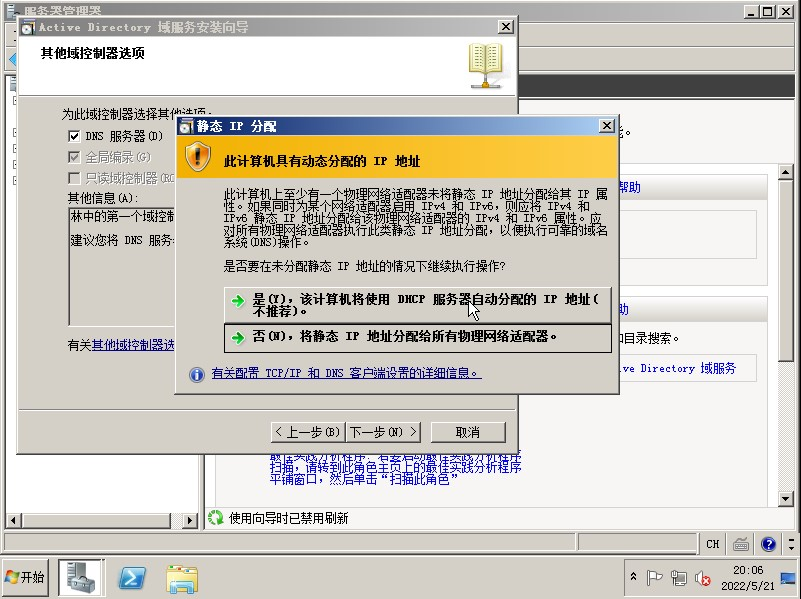
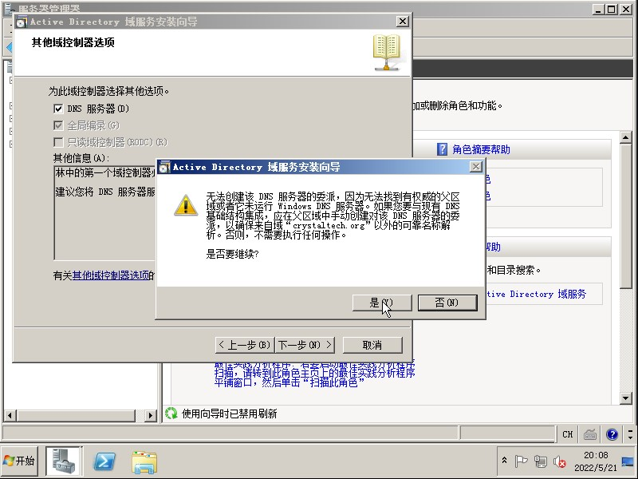
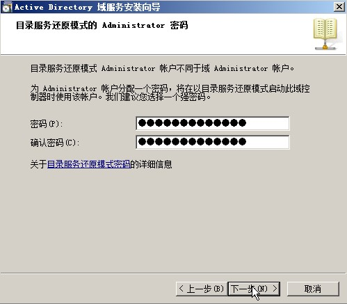
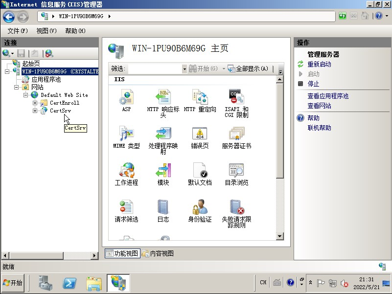
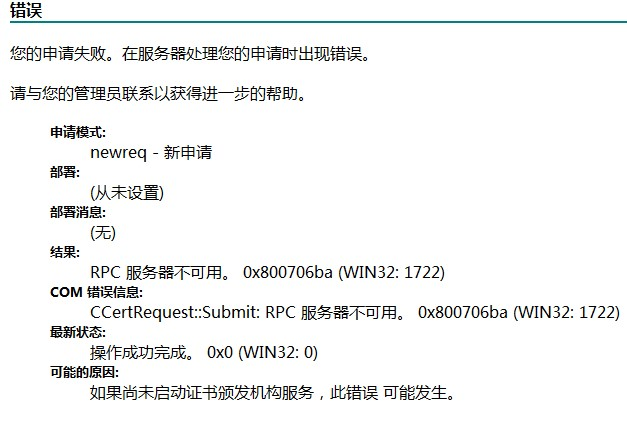

安装 Active Directory 证书服务
系统信息
操作系统:
Windows Server 2008 R2 Datacenter x64
下载:
安装 Active Directory 域服务
在
服务器管理器中选择添加角色勾选
Active Directory 域服务, 在添加角色向导中点击添加必须的功能

- 点击
安装按钮完成Active Directory 域服务的安装, 安装完成后点击关闭该向导并启动 Active Directory 域服务 安装向导(dcpromo.exe)

- 选中
在林中新建域, 点击下一步
如果出现如图所示的错误, 需要在控制面板中给
Administrator账户设置密码
在
命名林根域页面中输入根域的名字, 在接下来的设置林功能级别页面中设置基本为Windows Server 2008 R2如果提示静态IP分配, 则按照需求选择选项. 此处选择
是

- 提示
无法创建该 DNS 服务器的委派, 选择是

- 为 Administrator 分配密码

- 等待配置完成后, Active Directory 域服务 则已安装完毕
安装 Active Directory 证书服务
上部分操作完成后, 显示需要重启, 选择
不立即重新启动以管理员运行命令提示符后运行命令
net group "Domain Admins" <登录用户名> /add重新启动 Windows Server 2008
在
添加角色向导中选中Active Directory 证书服务在下一页中选中
证书颁发机构 Web 注册指定安装类型选择企业
在没有将当前用户添加到
Domain Admins或Enterprise Admins用户组中时,企业选项将无法选择
CA类型选择
根CA,新建私钥并保持默认设置完成安装后, 可以在 IIS 管理器 中
Default Web Site网站中找到certsrv选项

注意:
在访问证书签发的 Web 页面时需要使用 IP 地址进行访问, 并完成身份认证, 否则会出现以下错误信息

注: 使用 Windows 自带认证时可能出现无法登录的错误